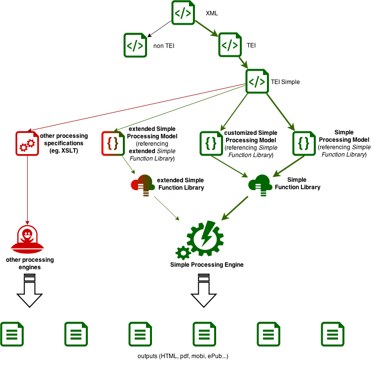

TEI elements are generally descriptive of the interpreted semantics of the source text (‘this is a title’, ‘this is a quotation’), where the interpretation is often based on a human interpretation of layout. The rend, rendition and style attributes are sometimes, but not necessarily, used to describe that layout. The resulting encoded text is very amenable to analysis, but for the common case of re-presenting the text on the web or in print as a digital edition, the TEI model by itself is incomplete.
The processing model notation allows each element to be assigned to a structural category (<model>), and given an outline rendition description (<rendition>). This allows a processor to know whether to handle the element or not, and broadly speaking how to display or otherwise process it. The model and rendition instructions are part of the TEI ODD, so can be changed in TEI customizations in the normal way.
Figure 1. Processing model workflow
This method of working (known informally as the Rahtz Rationale) assumes a workflow with three parts, and three distinct roles, to create a digital edition from a TEI text:
an editor manages the text integrity, makes the high-level output decisions. These fall into two parts
Structural descriptions, eg ‘should the original or corrected version be displayed by default’, or ‘is this a block level or inline component’
Indications of appearance (‘titles are in italics’).
a designer creates the output envelope (for example, and book layout using InDesign, or a web site using Drupal), making decisions in conjunction with the editor (‘use Garamond font throughout’ or ‘every page must show the departmental logo’)
a programmer takes the editor's specification, and the TEI text(s), and creates the input for the designer to make the output.
It is crucial to understand here that neither the designer nor the programmer need have any understanding of the semantics of TEI elements, or the structure of a TEI document. The programmer, particularly, can use the processing model rules to extract material from the TEI text in a relatively simple way. The method works for a variety of output formats, as the programmer simply has to provide implementations for a small number of functions, and understand the well-documented features of CSS. The concepts addressed by the functions (eg ‘block’ and ‘inline’) are in line with XSL FO, and HTML; the catalogue of functions is given under the element <model>.
An precondition for an implementation is that it must include an XPath 2.0 interpreter, as this is used in several places in the processing notation.
It is an principle of the processing model (known informally as the Turska Tenet) that the transformation stage should be minimally intelligent; that is to say, it should contain as few TEI-specific rules as possible. The ODD should be as explicit as possible, and provide maximum expressivity to the editor.
1.2. Processing model elements
There are two main elements for specifying the structural and appearance components of a processing model: For a given <elementSpec>, there can be as many <model> statements as required, each of which can have multiple <rendition> children. A set of multiple <model> statements is regarded as an alternation, i.e. only one of them will be applied; this is comparable to a ‘case statement’ in some programming languages. If the intention is for several <model> statements to be active at the same time, they can be enclosed inside a <modelSequence>.
Within each <model> there can be set of <rendition> elements.
Let us consider a simple case, the handling of the <hi> element. We decide that it is an inline element, normally rendered in italics:
The behaviour attribute has a value of a call to the function inline, with a parameter of the content of the element. The datatype for the parameter is always XPath 2.0, in which ‘.’ means ‘the current context’. Separately, the <rendition> element uses CSS syntax to specific the appearance. It would have been possible here to simply add display: inline to the rendition, to indicate that it is inline, but the intention is to separate the structural decision from the appearance decision.
It is common for <hi> to use a rendition attribute to indicate appearance. By default, this is ignored, but useSourceRendition can be used to indicate that it should be taken account of:
in this case the <rendition> is only a fallback and may be overridden by the rendition. This uses the same behaviour as CSS; ie if rendition involves a change to a different property than ‘font-style’, then this remains active.
If the processing model is context-dependent, we can use predicate (an XPath 2.0 expression) to show when different models apply:
Here the <model>s are alternatives; only if the test (the predicate) on the first fails will the second be activated.
So far we have mapped TEI elements to simple block and inline concepts. A more complex example is provided by processing the <choice> element; this is commonly used to provide a pair of alternates (eg <sic> and <corr>), and our processing model has decided to show the corrected version by default, but allow for the implementation to switch to, or display (perhaps as a tooltip), the alternate; this service is provided by a function alternate. We have three models, for different cases of input:
<model predicate="sic and corr"
behaviour="alternate"><param name="default">corr</param><param name="alternate">sic</param></model><model predicate="abbr and expan[1]"
behaviour="alternate"><param name="default">expan</param><param name="alternate">abbr</param></model><model predicate="orig and reg"
behaviour="alternate"><param name="default">reg</param><param name="alternate">orig</param></model>
Note the use of XPath 2.0 notation to choose the first of several possible sibling elements.
Sometimes we want different behaviour for different output formats, specified using output; the following example is designed to handle <date>, which has an optional when containing a regularized data. We allow for three situations: a) when there is text inside the element, and we are making print; b) when there is no text but there is a when attribute; and c) when we are making web pages. In the latter case, we use the same alternate function as in the previous example, but for print we force use of when when it is present.
Elements which have attributes can access the values using the usual XPath 2.0 notation. For example, the <ref> element has an important attribute, target, to which is a link should be created. Sometimes the <ref> has text content, but sometimes just the target. Our rule caters for these two situations:
Here the link function takes two parameters, the text to be shown, and the URL to which it should be linked.
2. Implementing the TEI processing model
A program which implements this processing model should proceed as follows:
When processing an element in the instance document, any applicable <model> or <modelSequence> for the current output format should be followed. Process them in order until a match with the predicate is found, or a <model> with no predicate is available. If a <model> has no predicate, it matches any occurrence of the element. If a <model> has no output, it applies to all outputs.
All of the <model>s inside a <modelSequence> should be applied in order (although they may have limiting predicates
Follow the function provided by the behaviour attribute. Where the value passed to that function is ‘.’, follow this process for all child elements of the current element, within the context of the named function. Thus a block should create a block-type object in the output for this element and all the results from processing its children.
If there are possible <model>s, but none has a predicate which matches the current element, proceed to its children and see if there are models for them.
If there is no <model> provided for the element, proceed to its children and see if there are models for them.
The special function omit means that processing should stop for this element, and move to the next sibling.
This is broadly similar to the processing model for XSLT.